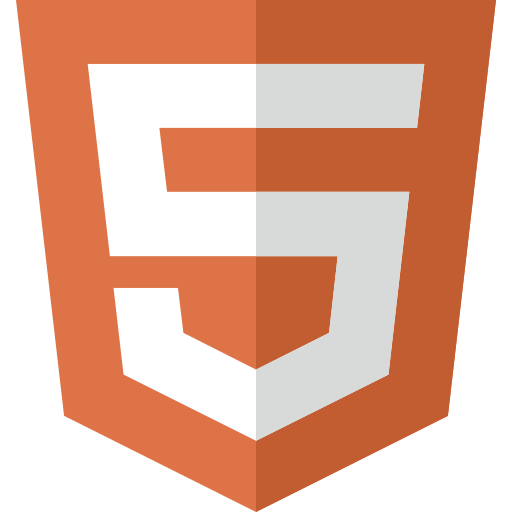
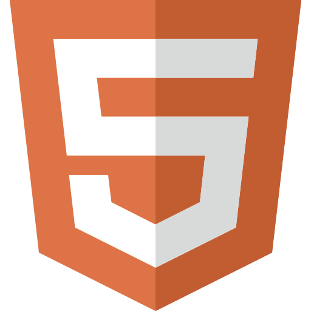
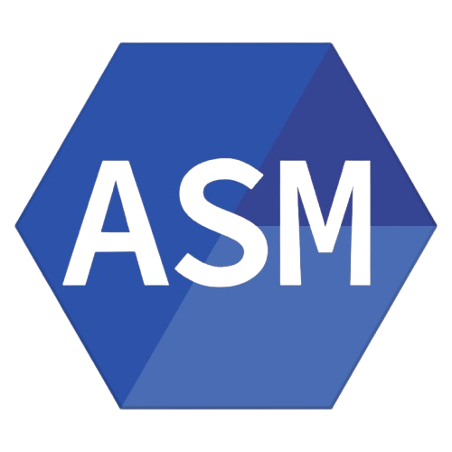
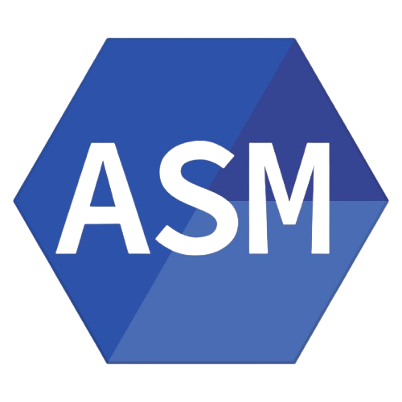

Hello, I'm Dominic
B.S. in Computer Science & Data Science @ Pitt
I design and build technologies that help people of all backgrounds harness the power of AI and Machine Learning.
Let's connect.About Me
I'm Dominic DeCarlo, a motivated Computer Science and Data Science student at the University of Pittsburgh. My focus is on the core technical areas that power modern technology, which means I've built expertise in Data Structures & Algorithms and applying Machine Learning and Artificial Intelligence. On the practical side, I love translating complex data into real-world solutions—whether I'm developing an AI Soccer Analysis System or performing detailed data analysis to provide actionable business insights, as I did during my IT internship. I'm also comfortable working across the stack, having built applications with Systems Software and Front-End Development tools like Tailwind, Next.js and TypeScript.
Outside of coding, I'm a proud Pittsburgh native and a huge sports fanatic—Go Steelers!. I follow football, basketball, and golf, but my biggest passion is soccer. When I step away from the keyboard, you can usually find me playing my guitar, planning my next travel adventure, cooking up a new dish, or hitting the gym to lift.
Education
University of Pittsburgh | Pittsburgh, PA
Bachelor of Science in Computer Science and Data Science
GPA: 3.6/4.0 | August 2023 - April 2027
Relevant Coursework
Projects Sneak Peek


Experience
IT Intern, Data Insights and Reporting Team
National Philanthropic Trust | Philadelphia, PA
May 2025 - August 2025
As an IT Intern, I developed a predictive AI/ML model using Python to forecast contribution trends, which allowed the team to better prepare for the busy giving season. I also analyzed large datasets to create insightful data visualizations like Sankey charts and Power BI dashboards, which improved reporting and offered a clearer understanding of donor behavior.
Camp Counselor
JCC South Hills Day Camp | Pittsburgh, PA
June 2024 - August 2024
As a Camp Counselor, I was responsible for leading daily activities for a diverse group of children, including many with disabilities. I worked to create a supportive and inclusive atmosphere, ensuring that every child had a positive and engaging camp experience throughout the day and in aftercare.
Skills
Languages


 


 

Frameworks/Libraries


Developer Tools